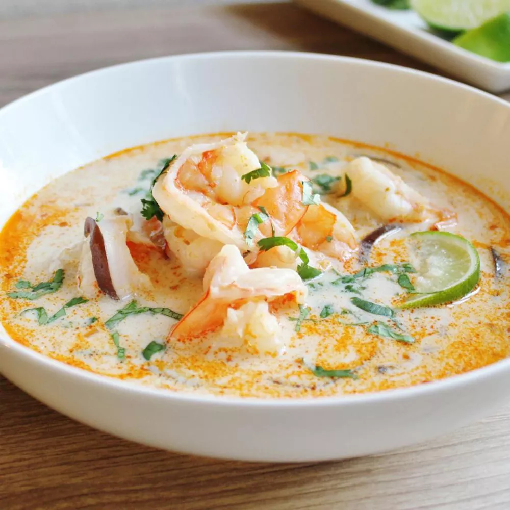

This Thai coconut soup is full of authentic, bold, and delicious Thai flavors.
This is the best Thai soup recipe out there — you won't be disappointed with this one!
Serve over steamed rice.
| Prep Time: | Cook Time: | Total Time: | Servings: |
|---|---|---|---|
| 30 mins | 30 mins | 1 hrs | 8 |
Heat oil in a large pot over medium heat. Add ginger, curry paste, and lemongrass; cook and stir in the hot oil for 1 minute.
Gradually stir in chicken broth, then stir in fish sauce and brown sugar; reduce heat to low and simmer for 15 minutes.
Add coconut milk and mushrooms; cook and stir until mushrooms are soft, about 5 minutes.
Add shrimp; cook until no longer translucent, about 5 minutes. Stir in lime juice; season with salt and garnish with cilantro.
